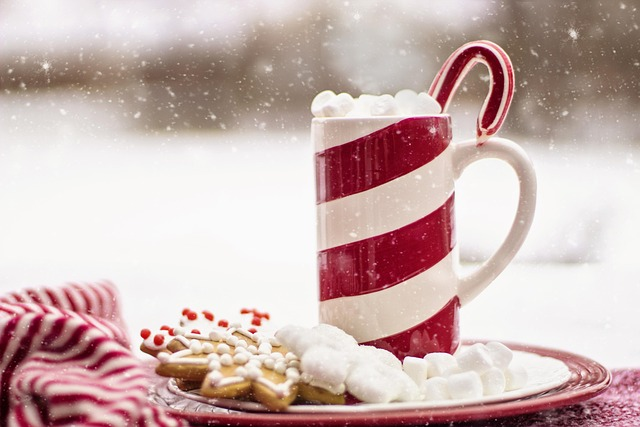

It snows during the winter, and the snow glitters and shines both day and night. People can go outside to play in the snow, and build snowmen, make snow angels, and have snowball fights. If none of those things suit anyone, they can also stay home with their families and spend time together. A common indoor activity to do when it snows is to sit by the window and drink cocoa while watching the snow fall. Other activities include Christmas movies, setting up Christmas decorations, or making Christmas decorations.
The decorations are jolly and festive, consisting of Christmas trees, snowmen, and famous Christmas movie characters. Any one can style the decorations in anyway, resulting in a variety of decorated houses to look at. There are also bright string lights that people put up, and they can consist of multiple colors and shapes. They can be regular lights, bubble lights, or detailed lights of Christmas characters. They look the best at night, because they really show off and help you to focus on them more, along with the other bright decorations.
During the Christmas season, families get to spend time together and bond, while enjoying activities and the actual morning of Christmas itself, where everyone opens their presents, eat luxury food, go to church, and visit relatives.